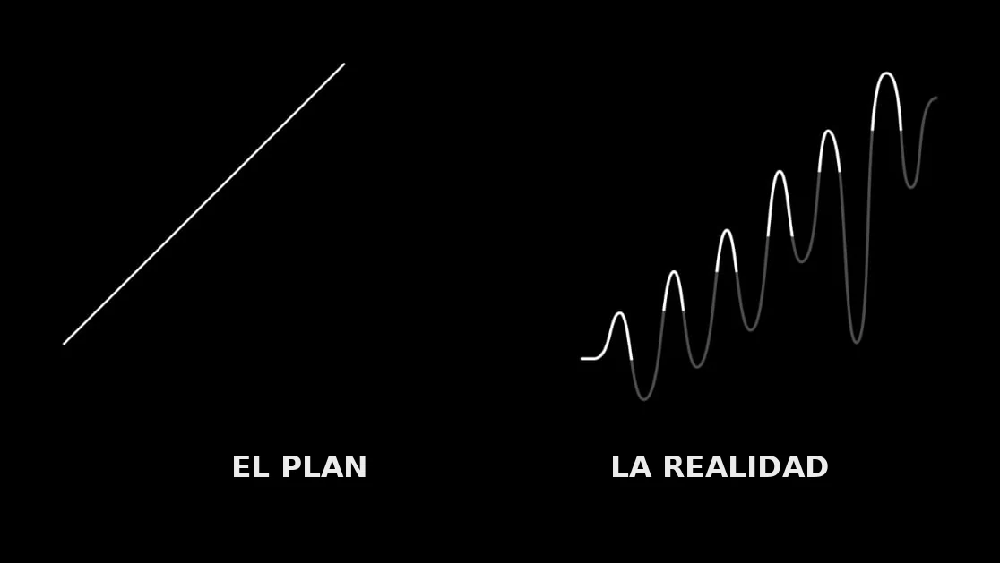
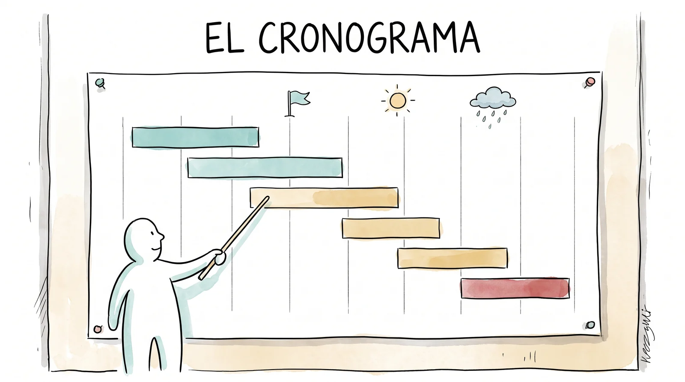
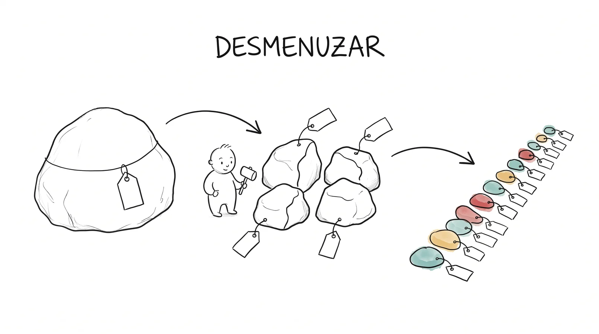
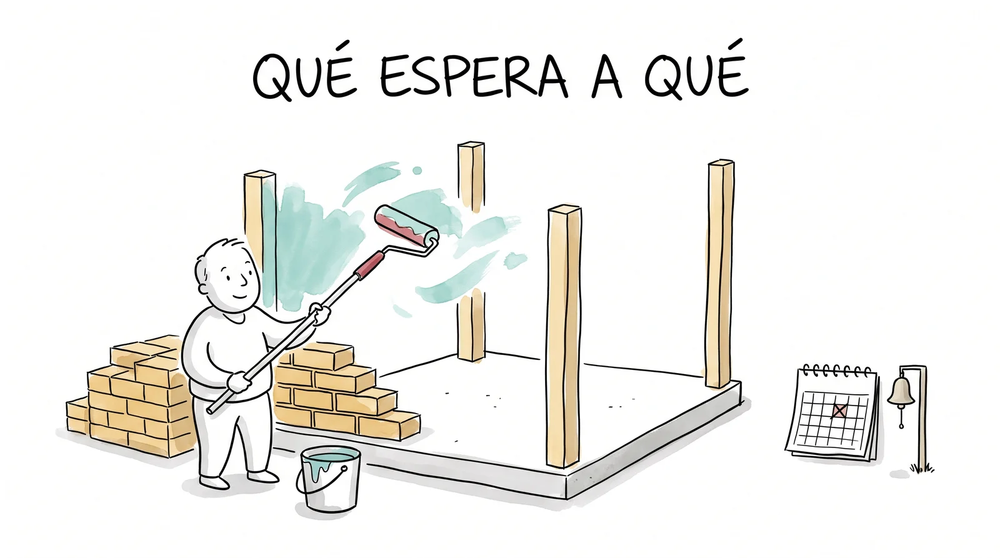
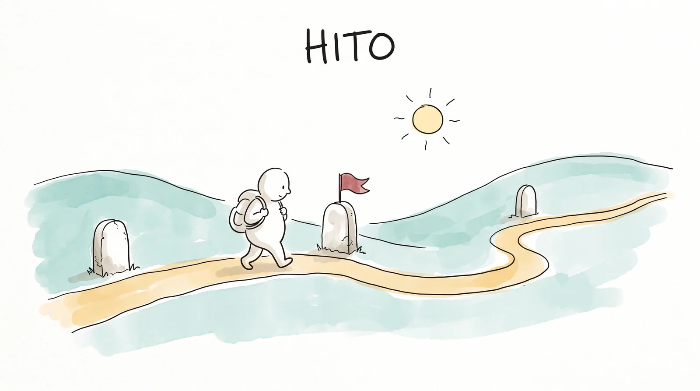
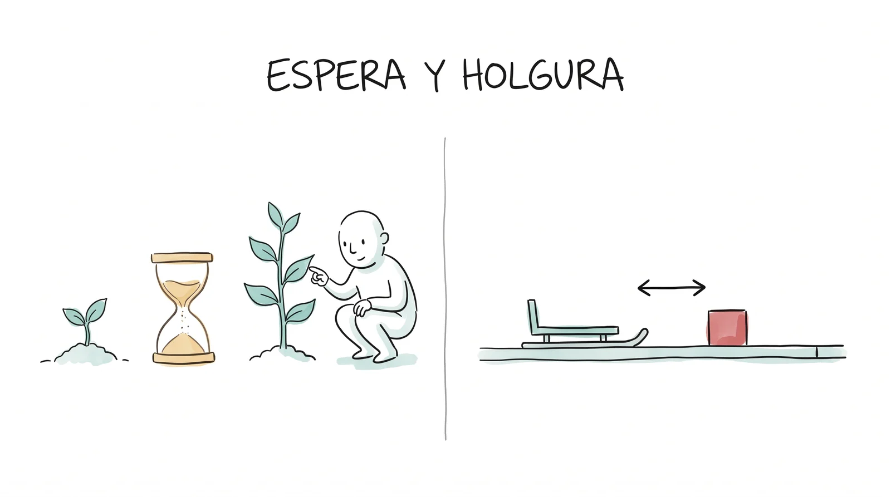
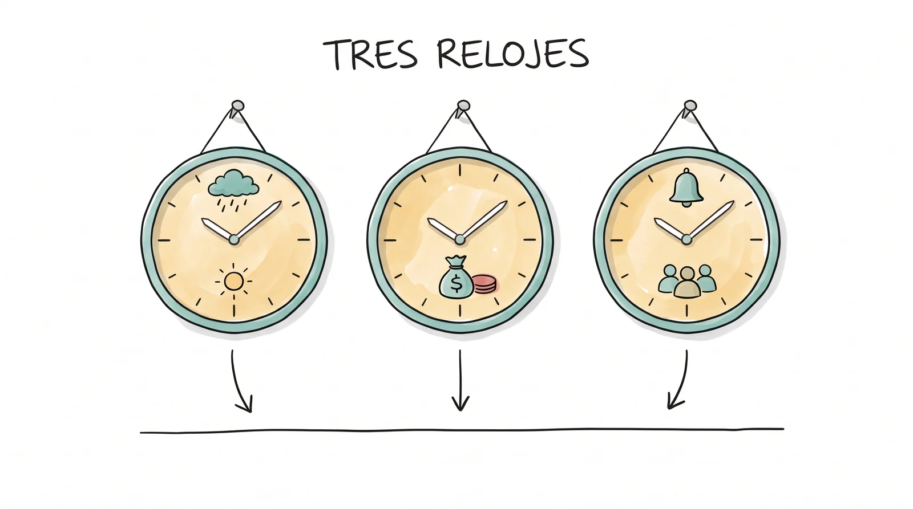
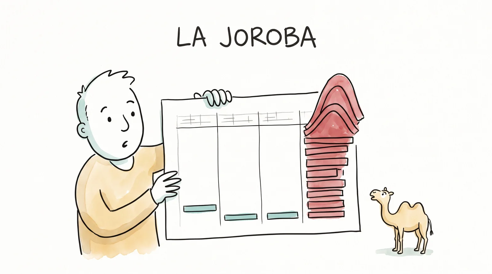

Un mazo de láminas: en clase se proyecta una por una con el botón Presentar (o doble clic sobre cualquier lámina para abrir el telón ahí). Las flechas avanzan; la tecla N muestra las notas del conductor. Cada lámina trae una sola idea, y la práctica viene después.
La promesa puesta en el calendario
Qué es un cronograma, para qué sirve, cómo se arma en cuatro pasos y por qué el calendario de La Florida obedece a tres relojes.
El cronograma
La promesa puesta en el calendario.
Antes de empezar, pedir que cada equipo tenga a la mano su marco lógico de La Florida: la columna de actividades es la materia prima de hoy.

El plan y la realidad.
Di: "Ningún proyecto sale como se planeó. Entonces, ¿para qué planear?" Dejar que contesten. La respuesta que se busca: para saber dónde se torció, cuánto se torció y qué hacer. Sin plan no hay desviación: solo hay sorpresa.
¿Qué pasa si siembran los cuarenta árboles en febrero?
Así se contesta: "Se secan. En febrero no llueve, el riego de auxilio no alcanza para cuarenta y nadie va a cargar agua a la orilla dos veces por semana hasta junio." La fecha de una actividad no es un detalle: a veces es la diferencia entre un bosque y cuarenta hoyos.
Buscar la respuesta en el equipo de reforestación. Rematar: por eso el proyecto necesita calendario, y por eso el calendario no lo decide el equipo solo: lo decide la lluvia.

El cronograma: la lista de lo que hay que hacer, puesta en el calendario.
Qué es
Un cronograma es tu lista de actividades acomodada en el tiempo: qué se hace, cuándo empieza, cuánto dura y quién responde.
Se dibuja como barras sobre un calendario: cada renglón es una actividad, cada barra dice de qué fecha a qué fecha, y a la izquierda va el nombre de quien la saca adelante. Lo inventó Henry Gantt hace más de cien años y por eso al dibujo se le dice "gráfica de Gantt".
Para qué sirve
Y una cuarta, que es la que más pesa ante Mayra: un cronograma que cabe es la prueba de que el equipo sí pensó cómo lo va a hacer. En la rúbrica del Fondo vale diez puntos de cien.
Cuatro pasos para armarlo.
- Desmenuzar: cada pieza del proyecto, partida en actividades que dejan algo contable.
- Ordenar: qué tiene que estar listo antes de qué.
- Medir: cuánto tarda cada actividad, preguntándole a quien ya lo hizo.
- Dibujar: las barras sobre el calendario, con su responsable y sus hitos.
Anunciar que vienen uno por uno y que al final de los cuatro cada equipo arma el suyo en la práctica.

Paso 1 · Desmenuzar.
1 Desmenuzar
A esto le dicen "estructura de desglose del trabajo": partir algo grande en pedazos cada vez más chicos hasta llegar a cosas que una persona puede hacer en días y que dejan algo que se puede contar. La prueba del renglón honesto: si una actividad no deja nada que se pueda enseñar (una lista, cuarenta cajetes, una foto, un acta), o son dos actividades o no es ninguna.
Así se desmenuza en La Florida
| Componente 1b | Pieza | Actividades (cada una deja algo) |
|---|---|---|
| Revegetar con nativas | Cuarenta árboles sembrados en cajete | Pedir la lista al vivero (remisión) · Hacer los cuarenta cajetes (foto) · Convocar la faena por la delegación (aviso) · Sembrar (lista de asistencia) · Regar de auxilio (bitácora de riego) · Contar vivos a los tres meses (tabla) |
| Revegetar con nativas | Cuarenta árboles sembrados | "Reforestar la orilla" |
El renglón de abajo no es una actividad: es el componente otra vez, con otro verbo. No se le puede poner fecha ni responsable, y por eso no cabe en un cronograma.

Paso 2 · Ordenar: qué espera a qué.
2 Ordenar: las dependencias
No puedes pintar las paredes de una casa antes de levantarlas.
Una dependencia es la relación de orden entre dos actividades: esta no puede empezar hasta que aquella termine. Hay tres clases, y conviene saber cuál es cuál porque no se negocian igual.
Preguntar a cada equipo por una dependencia externa de su línea. Casi todas pasan por la delegación, el vivero o la ministración: ahí viven los retrasos que nadie planeó.
Casi siempre es "termina una, empieza otra". A veces no.
La espera a propósito (la línea punteada) también se dibuja: entre sembrar y contar la sobrevivencia tienen que pasar tres meses, y ese hueco es parte del plan, no un retraso.
3 Medir: ¿cuánto tarda?
La duración no se adivina: se le pregunta a quien ya lo hizo.
Al encargado del vivero, al que ya organizó una faena, a quien ya puso un cerco. Y se cuenta en días de trabajo de personas: cuarenta cajetes son una mañana de ocho personas, no "una semana". Tres reglas: la primera vez tarda más que la segunda; el día de faena no es un día, es la convocatoria, el día y la limpieza; y lo que depende de otros (un oficio, una respuesta) tarda lo que esa persona tarde, y suele ser más de lo que crees.
Pedir a cada equipo una actividad de la que no sepan cuánto tarda, y a quién le van a preguntar. Esa pregunta también cuenta en la campana.
4 Dibujar: la gráfica de barras
Mira hacia abajo y ves qué pasa al mismo tiempo; mira a la derecha y ves qué espera a qué. La barra punteada sigue después de que el proyecto "termina": el riego de dos secas es parte del cronograma aunque ya no haya dinero del Fondo.

El hito: un punto, no una barra.
El hito
Un hito no dura: pasa. Es la fecha en que algo importante queda hecho o decidido.
Se dibuja como un rombo, no como barra. Los hitos de La Florida: la visita a la orilla del viernes 13 de noviembre; la entrega de la solicitud; el dictamen de Mayra; la llegada de la ministración; el conteo de sobrevivencia a los tres meses. Un hito bueno abre o cierra algo: "si a los tres meses viven más de treinta de los cuarenta, se siembra la segunda tanda".
Preguntar: ¿cuál es el hito que no depende de ustedes? La ministración. Todo lo que se compra se dibuja después de ese rombo.

La espera a propósito y la holgura.
Holgura: cuánto puede atrasarse un renglón sin atrasar a los demás
Los letreros pueden esperar una semana. La siembra no puede esperar ni un día de lluvia.
A eso le dicen holgura. Saberla te dice dónde pelear y dónde relajarte: el renglón sin holgura (el que, si se atrasa, atrasa todo) es el que se vigila cada semana. En La Florida casi siempre es el que depende de la lluvia o de la delegación.

El calendario de La Florida obedece a tres relojes.
Los tres relojes
Cuando dos relojes chocan, gana el que no puedes mover: si el dinero llega en seca, el cajete se hace y la siembra espera a junio.

El error clásico: la joroba.
Las cinco ilusiones del calendario
| La ilusión | Cómo se ve |
|---|---|
| La dependencia invertida | Instalar antes de comprar; sembrar antes del flete. |
| La joroba | Todo amontonado en la última semana, donde ya no hay margen para que algo salga mal. |
| El renglón sin dueño | "Responsable: el equipo". Lo que es de todos no es de nadie. |
| La faena instantánea | Convocar de un día para otro, y sin la autoridad. |
| No creerle al cielo | Obra a la intemperie sin fecha B. |
Si hay tiempo, proyectar el gimnasio "El cronograma iluso" (ejercicios/semana-10): seis renglones del manantial, cinco con una de estas ilusiones.
Dos horizontes, un solo plan
Es el mismo plan visto con dos lupas: la microintervención es el primer tramo del proyecto completo, y los dos comparten el hito del 13 de noviembre. En la práctica se dibujan los dos.
El cronograma de tu componente de La Florida: desmenuza, ordena, mide, dibuja.
Abran la práctica del cronograma en una laptop por equipo. Las actividades de su marco lógico ya vienen cargadas para empezar; se corrigen, se parten y se completan. La herramienta dibuja la gráfica sola y avisa de las cinco ilusiones. Al terminar: descargar y guardar en el Drive del equipo.
Abrir la práctica ▸Rondar con tres preguntas: ¿qué deja esta actividad?, ¿qué tiene que estar listo antes?, ¿quién responde? Vigilar la joroba y las dependencias externas (delegación, vivero, ministración). Los criterios del reto 5 ya están publicados: dependencias respetadas, responsable por renglón, fecha B para lo que se moja, y que la microintervención quepa en cuatro semanas sin joroba.